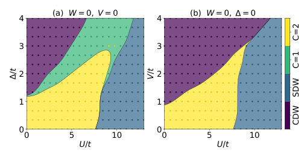
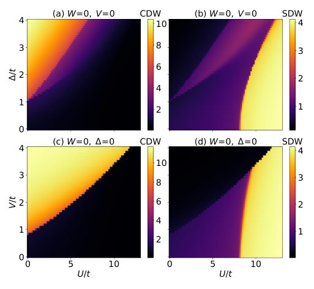

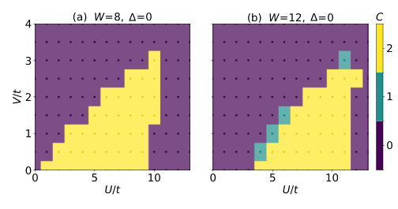
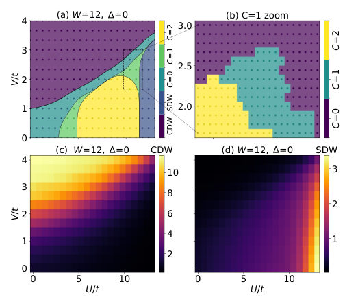
← Index · ← Previous · Next →
Authors: Abolfazl Younesi, Nouhaila Innan, Alberto Marchisio, Muhammad Shafique
Type: theory · Category: quantum information and computing · PDF: https://arxiv.org/pdf/2605.27540v1
Analysis basis: full PDF text, analyzed in chunks
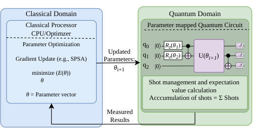
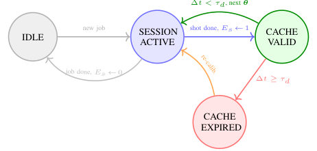
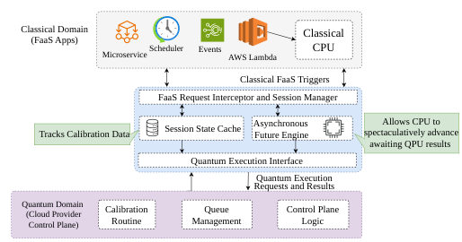
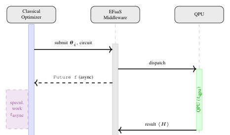
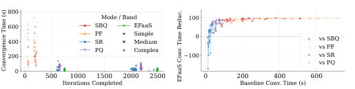
Summary. The paper proposes EFaaS, a serverless middleware designed to optimize the execution of hybrid quantum-classical algorithms. By treating classical optimization and quantum execution as entangled, session-aware events, it minimizes the latency and hardware drift that typically plague cloud-based quantum computing.
Why it may be interesting. not directly relevant
Main problem. High latency and 'quantum drift' in hybrid variational quantum algorithms (VQAs) caused by decoupled, batch-queue cloud architectures that break the iterative loop between classical optimizers and QPUs.
Main result. The EFaaS middleware achieves convergence speedups of 83.2%-98.3% and significantly reduces Time-to-Next-Shot (TTNS) by up to 94.3% while maintaining near-zero hardware drift penalties.
Method. A serverless middleware architecture using a Calibration-Aware placement strategy, a Dual-Resource Fair Queuing (DRFQ) scheduler, and an 'EF-QuantumFuture' programming primitive for speculative classical execution.
Model / system. A distributed hybrid quantum-classical environment consisting of a pool of QPUs (superconducting and ion-trap) and classical FaaS nodes, simulating VQE and QAOA workloads on Hamiltonians like LiH and the transverse-field Ising chain.
Key observables. Time-to-Next-Shot (TTNS), Quantum Duty Cycle (QDC), end-to-end convergence time, and drift penalty events.
Important parameters / regimes. Drift threshold (tau_drift), calibration validity window, and scheduling weights (alpha, beta, gamma) for session awareness, drift urgency, and fair-share.
Assumptions / limitations. The effectiveness of stochastic optimizers relies on the assumption of i.i.d. sampling, which is violated by hardware drift; the system assumes a discrete-event simulation model for traffic.
Figures summary. Figure 1 shows the hybrid iterative workflow; Figure 2 details the EFaaS architecture; Figure 3 depicts the Session Awareness Engine state machine; Figure 4 illustrates the overlapping execution of classical and quantum tasks; Figure 8 and 9 show the reduction in drift events and calibration overhead.
Paper structure. The paper introduces the latency/drift problem, proposes the EFaaS architecture and its three technical innovations, provides a mathematical model for latency and scheduling, presents experimental results via a discrete-event simulator, and performs ablation and sensitivity studies.
As quantum computing enters the Utility Era, realizing near-term advantage relies heavily on Hybrid Variational Quantum Algorithms (VQAs). These algorithms require a tightly coupled, iterative loop between a classical CPU optimizer and a Quantum Processing Unit (QPU). However, current quantum cloud access models are bottlenecked by decoupled batch-queues that sever this loop, introducing massive Time-to-Next-Shot (TTNS) latency. This delay inflates convergence time from minutes to hours and exposes the computation to quantum hardware drift, degrading algorithmic fidelity. Unlike prior works that rely on resource-wasting static hardware reservations or state-oblivious stateless functions, we propose EFaaS, a novel serverless middleware designed specifically for hybrid quantum workflows. EFaaS fundamentally departs from existing architectures by treating classical parameter optimization and quantum circuit execution as entangled, session-aware events. Our main technical innovations are threefold: (1) a Calibration-Aware placement strategy that dynamically routes circuits to QPUs with warm calibration caches, circumventing cold-start penalties, (2) a Dual-Resource Fair Queuing scheduler that maximizes quantum utilization by strictly prioritizing active iterative loops, and (3) the "EF-QuantumFuture" programming abstraction, a novel primitive enabling classical speculative execution to mask compute latency. Across the evaluated baselines, EFaaS achieves TTNS reductions of 11.4%-94.3%, QDC gains of 2.02%-15.78% points, and convergence speedups of 83.2%-98.3%, while eliminating drift penalties.
Authors: Alejandro J. Uría-Álvarez, Roser Valentí
Type: theory · Category: disordered systems and neural networks · PDF: https://arxiv.org/pdf/2605.27524v1
Analysis basis: full PDF text, analyzed in chunks




Summary. This paper explores how disorder can induce new topological phases in interacting systems. It specifically demonstrates the emergence of an antiferromagnetic topological Anderson insulator in the Haldane model, showing that disorder can effectively replace a staggered mass to create a C=1 phase. The study also showcases the utility of neural networks in identifying topological phase boundaries in disordered many-body systems.
Why it may be interesting. not directly relevant
Main problem. Investigating whether an antiferromagnetic (AFM) C=1 topological phase can be induced by Anderson disorder in the absence of a staggered mass in the interacting Haldane model.
Main result. The study identifies an antiferromagnetic topological Anderson insulator phase, demonstrating that Anderson disorder can generate the charge imbalance necessary to induce the C=1 phase.
Method. The authors use Exact Diagonalization (ED) on a 12A cluster and a Convolutional Neural Network (CNN) trained on the single-particle density matrix to predict Chern numbers and resolve phase boundaries.
Model / system. A spinful Haldane model on a honeycomb lattice including Hubbard (U) and nearest-neighbor density-density (V) interactions, subject to onsite Anderson disorder (W) and a staggered potential (Delta).
Key observables. Many-body Chern number (C), Spin Density Wave (SDW) structure factor, and Charge Density Wave (CDW) structure factor.
Important parameters / regimes. Hubbard interaction (U), density-density interaction (V), Anderson disorder strength (W), and staggered mass (Delta).
Assumptions / limitations. The ground state is assumed to be non-degenerate for the use of the Abelian Berry connection; results are limited by finite-size effects of the 12A cluster.
Figures summary. Figure 1 shows clean model phase diagrams; Figure 2 shows CDW/SDW diagrams; Figure 3 shows phase diagrams at specific disorder strengths; Figure 4 shows CNN-predicted phase diagrams; Figure 5 compares ED and CNN results; Figure 6 shows SDW structure factor and phase classification percentages.
Paper structure. The paper begins with the clean model phase diagrams, moves to the introduction of disorder and the identification of the AFM topological phase, presents the machine learning methodology for phase prediction, and concludes with a comparison of ED and CNN results and the analysis of phase competition.
We examine the emergence of topological Anderson insulating phases in the spinful Haldane model with Hubbard and next-neighbor density-density interactions, subject to Anderson disorder. Using finite-size exact diagonalization, we characterize the phases that arise from the interplay between topology, interactions, and disorder. In addition to standard $C=2$ topological Anderson phases, we observe an antiferromagnetic $C=1$ topological Anderson phase, consistent with the antiferromagnetic quantum anomalous Hall insulator previously identified in the clean model at finite staggered mass. We further analyze these phases using a neural network trained on the exact diagonalization data. Our results support the hypothesis that an explicit charge imbalance is required to induce the $C=1$ phase, generated by Anderson disorder rather than by a staggered mass.
Authors: Junnan Guo, Shufan Song, Wenhui Fang, Jifeng Tang, Wenhao Li, Weikang Wu, Hui Li, Shishen Yan, Lishu Zhang
Type: both · Category: other · PDF: https://arxiv.org/pdf/2605.28381v1
Analysis basis: full PDF text, analyzed in chunks
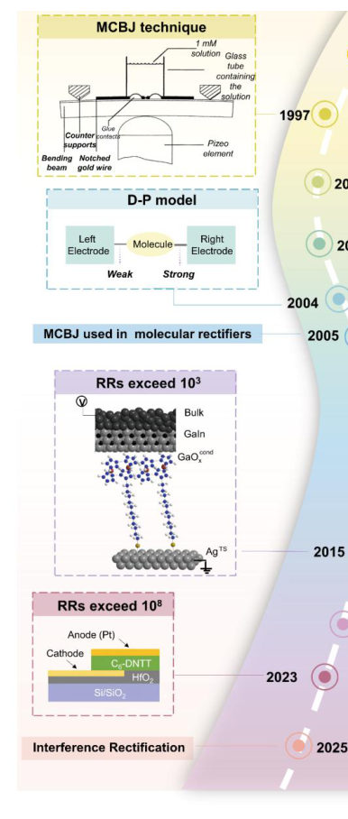
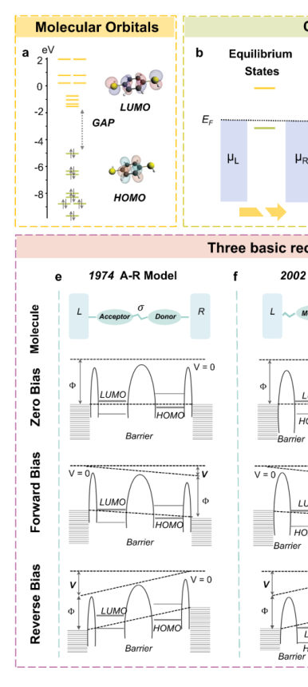
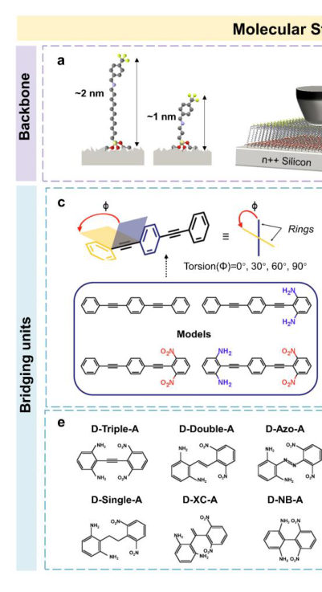
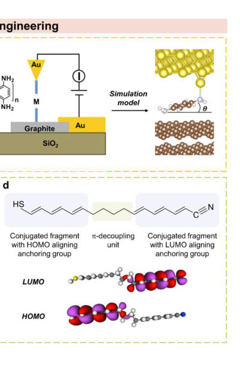
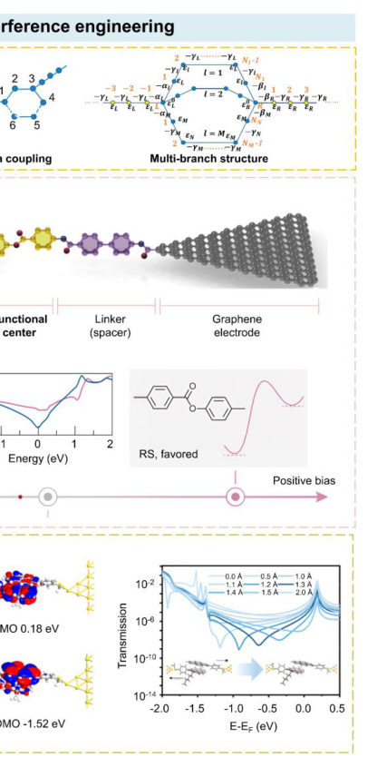
Summary. This review provides a comprehensive overview of the mechanisms and engineering strategies used to create high-performance molecular rectifiers. It covers how molecular structure, electrode interfaces, and quantum interference can be manipulated to enhance rectification ratios for post-CMOS electronics.
Why it may be interesting. not directly relevant
Main problem. The challenge of developing molecular rectifiers that are competitive with silicon-based devices by overcoming limited rectification ratios, poor robustness, and low reproducibility.
Main result. The review provides a comprehensive framework for engineering molecular rectifiers through structural, interfacial, and quantum interference engineering, demonstrating that rectification can be tuned via molecular design and external stimuli.
Method. The paper integrates theoretical frameworks like DFT-NEGF and Landauer-Büttiker formalism with experimental platforms such as STM-BJ, MCBJ, and self-assembled monolayers.
Model / system. The physical system consists of single-molecule junctions and molecular ensembles (e.g., D-sigma-A architectures) linked to metallic or carbon-based electrodes.
Key observables. Rectification Ratio (RR), conductance, current-voltage (I-V) characteristics, and transmission probability.
Important parameters / regimes. HOMO-LUMO gap, energy-level alignment, coupling strength, and transport regimes (coherent vs. incoherent).
Assumptions / limitations. The review discusses limitations such as the difficulty in achieving simultaneous interfacial tunability and long-term stability.
Figures summary. Figure 1 shows a historical roadmap of molecular rectifiers; Figure 2 illustrates theoretical models (AR, KBW, DP) and energy spectra; Figure 3 depicts structural engineering strategies; Figure 4 illustrates electrode and interface engineering.
Paper structure. The paper follows a logical progression from historical evolution and fundamental transport mechanisms (AR, KBW, DP models) to specific modulation strategies (structural, interfacial, and quantum interference engineering) and concludes with future outlooks for device integration.
Molecular rectifiers, as prototypical components of molecular electronics, present unique opportunities for pushing device miniaturization to its ultimate limits. Nevertheless, challenges including limited rectification ratios (RR), insufficient robustness, and poor reproducibility impede their practical deployment. To make molecular rectifiers competitive with silicon-based devices, it is important to fully understand the design principles and fabrication methods from both mechanistic and experimental perspectives. By holistically considering the transport mechanisms, modulation strategies, fabrication, characterization techniques, and theoretical simulations, this review provides a comprehensive overview of molecular rectifiers. Representative examples of conceptually significant and high-performance molecular rectifier systems are highlighted to illustrate the relationships between rectification mechanisms, molecular design strategies, and device realization. Building on these discussions, we present an outlook for current bottlenecks and future directions to guide the development of molecular rectifiers. This review aims to serve as both a conceptual framework and a technical reference for researchers working at the intersection of molecular electronics and nanoscale device engineering in the post-CMOS era.
Authors: Satoshi Kanno, Rei Nishimura, Hiroshi Yamauchi, Yoshi-aki Shimada
Type: theory · Category: disordered systems and neural networks · PDF: https://arxiv.org/pdf/2605.28326v1
Analysis basis: full PDF text, analyzed in chunks
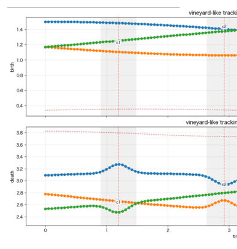
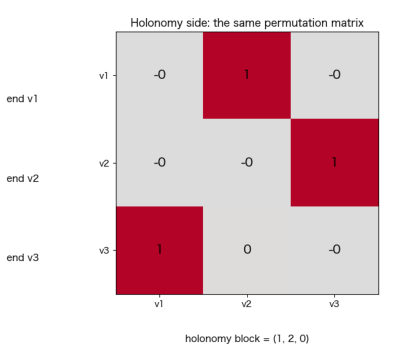
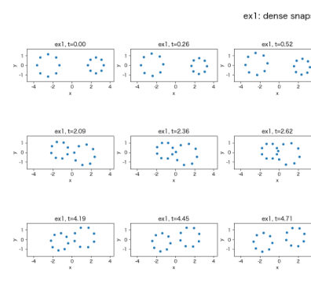
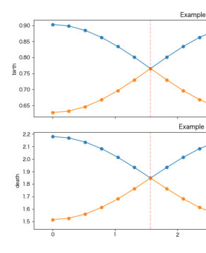
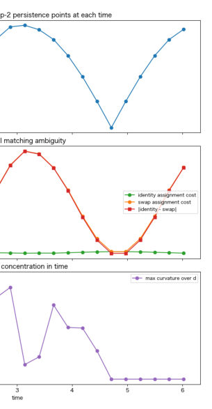
Summary. This paper introduces a new way to track how topological features in data evolve over time or external parameters. By treating homology as a geometric bundle, it uses concepts like curvature and holonomy to detect structural changes that traditional methods miss.
Why it may be interesting. The use of Berry connection, curvature, and holonomy to describe the evolution of topological features is directly analogous to the study of geometric phases and topological invariants in many-body systems and driven quantum dynamics.
Main problem. Standard Topological Data Analysis (TDA) tools like persistence diagrams fail to capture how homological feature spaces reorganize, mix, or transport when data depends on external parameters like time or control variables.
Main result. The authors develop a gauge-geometric framework using the Hodge Laplacian to describe the transport of homology, proving that curvature and holonomy are stable descriptors of structural reorganization in regular parameter regions.
Method. The framework uses the combinatorial Hodge Laplacian to represent homology as a zero-mode bundle, applying Berry-type connection, curvature, and holonomy to track feature evolution.
Model / system. A parameter-dependent family of simplicial complexes (e.g., Vietoris-Rips filtrations) where the topology is studied as a vector bundle over a parameter space (time, temperature, or external fields).
Key observables. Curvature (local reorganization), Holonomy (accumulated memory/monodromy), and zero-mode projections.
Important parameters / regimes. Filtration scale (a), external parameter (lambda), spectral gap (gamma), and smoothing parameter (epsilon).
Assumptions / limitations. The theory assumes 'regular regions' where the zero-mode multiplicity is constant and a spectral gap exists; it also uses a smooth approximation for the discrete Laplacian.
Figures summary. The figures likely include curvature heatmaps identifying reorganization regions, comparisons between vineyard-style tracking and holonomy-guided tracking, and stability plots showing error bounds under noise.
Paper structure. The paper introduces the limitations of existing TDA, constructs a smooth Hodge-type operator and a zero-mode vector bundle, defines geometric quantities (connection, curvature, holonomy), provides stability proofs via Riesz projection, and validates the method through numerical experiments on time-dependent point clouds.
We propose a practical computational framework for detecting structural changes in parameter-dependent topological data. In many applications, such as time-series data analysis, anomaly detection, and monitoring of systems under changing control parameters, persistence diagrams describe the birth and death of topological features at each parameter value, but they do not fully capture how these features are reorganized over time. To address this limitation, we represent homological features by zero modes of the ordinary combinatorial Hodge Laplacian and track the corresponding feature spaces in a common ambient chain space. This allows us to compute curvature and holonomy as descriptors of local reorganization and accumulated memory in evolving topological structures. Curvature highlights parameter regions where homological features mix or change rapidly, while holonomy summarizes the net effect of such changes after a closed cycle. We also establish stability estimates showing that these descriptors are robust under perturbations of the Hodge Laplacian on regular regions. Numerical experiments on controlled time-dependent point-cloud data show that the proposed method detects tracking instability, distinguishes systems with nearly identical persistence diagrams, and captures cycle-level memory invisible to pointwise feature matching. These results suggest that zero-mode transport geometry can serve as a useful computational tool for analyzing dynamic topological data.
Authors: Zhen Qin
Type: theory · Category: quantum information and computing · PDF: https://arxiv.org/pdf/2605.27795v1
Analysis basis: full PDF text, analyzed in chunks
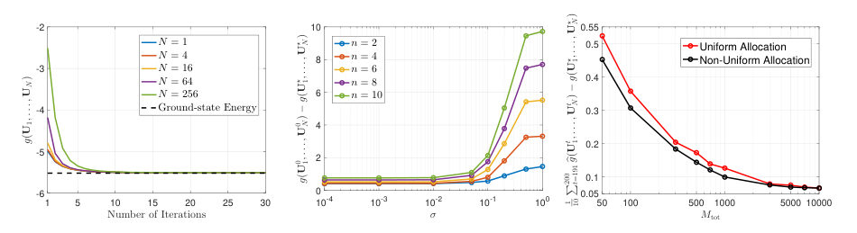
Summary. This paper provides a unified geometric analysis of the VQE optimization landscape, proving that the landscape is free of spurious local minima. It establishes convergence guarantees for Riemannian Gradient Descent and provides a theoretical link between circuit depth and the emergence of barren plateaus.
Why it may be interesting. It provides a rigorous geometric foundation for understanding why VQE can be trained and how circuit depth and measurement noise fundamentally impact the convergence of variational algorithms.
Main problem. The lack of a unified geometric characterization of the VQE optimization landscape, specifically addressing the fragmentation between fixed-ansatz and adaptive-circuit formulations and the challenges of barren plateaus and noise robustness.
Main result. The paper establishes that the VQE landscape is geometrically benign (no spurious local minima, only global minima or strict saddles) and proves that Riemannian Gradient Descent (RGD) achieves linear convergence, though the rate deteriorates polynomially with circuit depth.
Method. The authors use Riemannian geometry on the unitary group, analyzing the landscape via the Riemannian Hessian and applying Riemannian Gradient Descent (RGD) with a polar-based retraction.
Model / system. The study focuses on the Variational Quantum Eigensolver (VQE) framework using parameterized quantum circuits (product-unitary ansatz) to approximate the ground-state energy of a Hamiltonian H.
Key observables. Ground-state energy expectation value, Riemannian gradient, and Riemannian Hessian.
Important parameters / regimes. Circuit depth (N), spectral gap (delta_1), Hamiltonian norm (||H||), and measurement budget (M).
Assumptions / limitations. Assumes smooth parametrization of the ansatz layers, use of Pauli-decomposed Hamiltonians for noise analysis, and an initial state within a specific energy error threshold.
Paper structure. The paper introduces a unified ansatz-free product-unitary formulation, analyzes the landscape geometry (global minima and strict saddles), investigates initialization feasibility via random Pauli rotations, and concludes with a study of robustness under finite-shot measurement noise.
The Variational Quantum Eigensolver (VQE) is a fundamental algorithm in quantum computing, yet a coherent geometric characterization of VQE remains missing due to fragmented analyses across fixed-ansatz and adaptive-circuit formulations. In this paper, we establish a geometric analysis of VQE in terms of optimization landscape, initialization guarantee, and noise robustness. First, we study the optimization landscape via an ansatz-free product-unitary formulation over the unitary group, unifying both paradigms. For the single-unitary case, we establish linear convergence of Riemannian gradient descent (RGD) and prove the strict saddle property. For the product-unitary case, we show the convergence rate deteriorates polynomially with circuit depth, providing a geometric explanation of the barren plateau phenomenon. Second, we prove that small-angle random Pauli-rotation circuits satisfy the required initialization conditions with high probability. Third, we show that RGD retains linear convergence under finite-shot measurements, and that coefficient-adaptive allocation achieves strictly lower statistical error than uniform sampling under a fixed measurement budget.
Authors: Abdul Basit, Richard A. Mole, Alex J. Brown, Jiatu Liu, Chris D. Ling, Stephan Rachel
Type: both · Category: strongly correlated electrons · PDF: https://arxiv.org/pdf/2605.27518v1
Analysis basis: full PDF text, analyzed in chunks
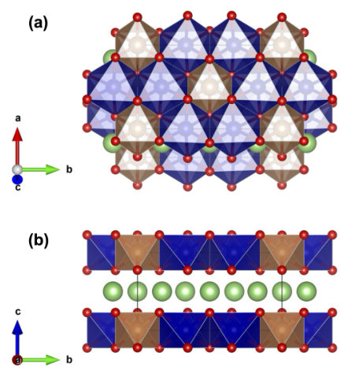
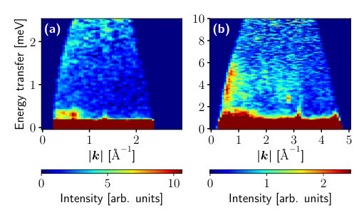
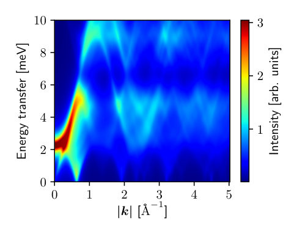
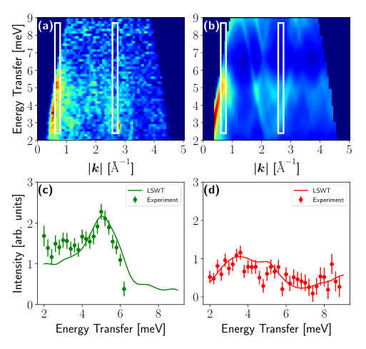
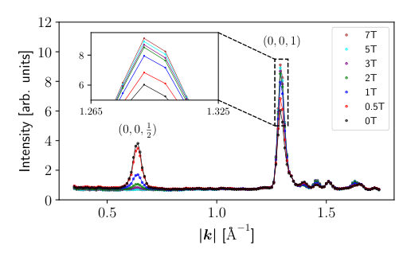
Summary. This paper identifies Li3Co2SbO6 as a Kitaev A-type antiferromagnet using inelastic neutron scattering. It demonstrates that the magnetic excitations and field-induced transitions are accurately described by an extended Kitaev-Heisenberg model. This provides a new material platform for studying Kitaev physics in a ferromagnetic-plane system.
Why it may be interesting. not directly relevant
Main problem. The study aims to characterize the magnetic properties and exchange interactions of the layered honeycomb magnet Li3Co2SbO6 to determine if it acts as a Kitaev ferromagnet.
Main result. The researchers established Li3Co2SbO6 as a Kitaev A-type antiferromagnet, where magnetic properties are well-modeled by an extended Kitaev-Heisenberg model including significant Kitaev and off-diagonal Gamma interactions.
Method. Inelastic Neutron Scattering (INS) was used for experimental measurements, while Linear Spin Wave Theory (LSWT) and numerical energy minimization were used for theoretical modeling and parameter fitting.
Model / system. The system is Li3Co2SbO6, a layered cobalt-based quantum magnet with an A-type antiferromagnetic ground state. The model is an extended Kitaev-Heisenberg Hamiltonian including bond-dependent Kitaev (K), Heisenberg (J1), and off-diagonal (Gamma and Gamma') exchange terms.
Key observables. Magnetic Bragg reflections, dynamical structure factor (DSF), magnon excitation spectra, and magnetization curves.
Important parameters / regimes. Magnetic ordering temperature TN = 14 K; exchange parameters (J1, K, Gamma, Gamma', Jperp) = (-1.57, -5.90, 0.97, 0.35, 0.50) meV; magnetic field strengths up to 7 T.
Assumptions / limitations. The magnetic unit cell is assumed to remain stable under an applied field, and the analysis uses a Holstein-Primakoff expansion truncated to leading order.
Figures summary. Fig 1 shows the crystal structure; Fig 2 shows INS spectra at different wavelengths; Fig 3/4 shows the calculated DSF compared to experiment; Fig 5 shows neutron powder diffraction under magnetic fields; Fig 7 shows INS spectra at 7 T; Fig 8 shows classical spin configurations; Fig 10/11 show the evolution of spectra and gap opening with field orientation; Fig 12 checks for sample reorientation.
Paper structure. The paper introduces the material and its importance, describes the crystal structure and experimental setup, presents zero-field INS and diffraction results, details the theoretical modeling using LSWT, investigates the effects of external magnetic fields on both diffraction and dynamics, and concludes with a comparison to related cobalt-based compounds.
Cobalt-based quantum magnets forming layered honeycomb arrangements have attracted much attention recently, as they are considered as a potential platform for materials with exotic Kitaev spin exchange. Amongst the discussed candidate materials are Na$_3$Co$_2$SbO$_6$ and Na$_2$Co$_2$TeO$_6$, both possessing a low-temperature ground state with magnetic zigzag ordering, similar to Na$_2$IrO$_3$ and $α$-RuCl$_3$. Here we report inelastic neutron scattering experiments on the quantum magnet Li$_3$Co$_2$SbO$_6$, which features ferromagnetic honeycomb planes with opposite magnetizations in neighboring planes. By comparing with linear spin wave theory, we show that the magnetic properties of Li$_3$Co$_2$SbO$_6$ can be well-modelled by an extended Kitaev--Heisenberg model, establishing it as a Kitaev-ferromagnet, or more specifically, as a Kitaev A-type antiferromagnet. Our analysis is complemented by magnetic field measurements and simulations.
Authors: Emmett Hough, Tahiyat Rahman, Forest Tschirhart, Subhadeep Gupta
Type: experiment · Category: quantum gases · PDF: https://arxiv.org/pdf/2605.27777v1
Analysis basis: full PDF text, analyzed in chunks
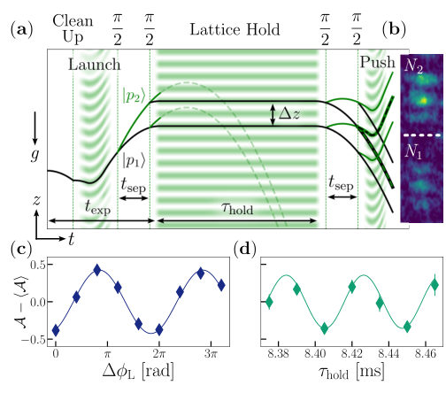
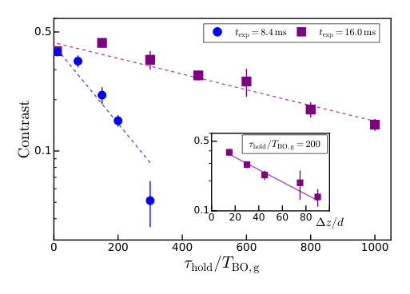
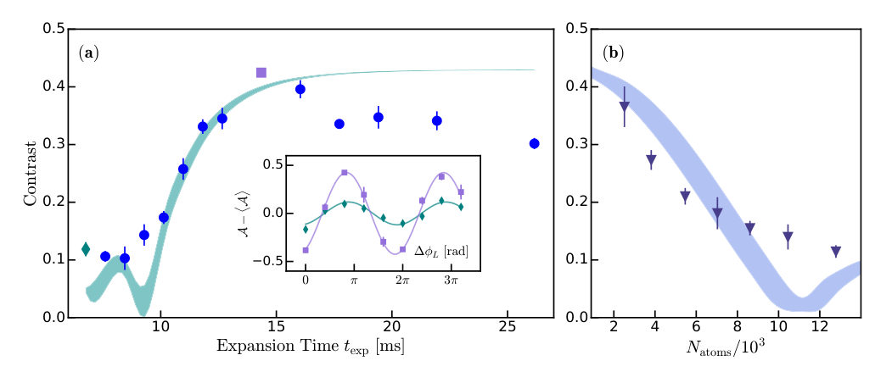
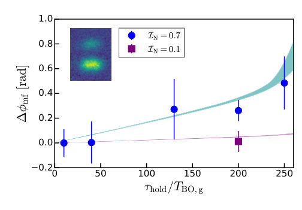
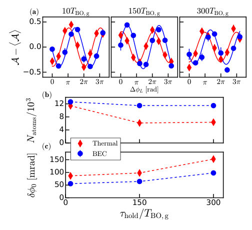
Summary. This paper demonstrates an atom interferometer using a Ytterbium Bose-Einstein Condensate trapped in an optical lattice. The authors show that interatomic interactions can be controlled by tuning the density of the BEC, and that using a BEC source can significantly reduce statistical phase error compared to thermal sources.
Why it may be interesting. It explores the transition from single-atom physics to many-body dynamics in a sensing platform, providing insights into how mean-field effects can be harnessed or mitigated for improved quantum metrology.
Main problem. Investigating how mean-field interactions and density-dependent effects impact the coherence, phase, and performance of a lattice-trapped atom interferometer using a BEC source.
Main result. The researchers demonstrated direct observation and control of atomic interactions by tuning BEC density, showing that a BEC source can outperform a thermal source in statistical phase error and atom flux.
Method. The experiment uses a 1D optical lattice-trapped interferometer with a Ytterbium BEC, employing Bragg pulses for splitting and Bloch oscillations for path separation, while varying expansion time and atom number to control density.
Model / system. A 1D optical lattice-trapped interferometer using a 174-Yb Bose-Einstein Condensate. The system is modeled using the Gross-Pitaevskii equation and a mean-field model for density-induced phase shifts.
Key observables. Interferometer contrast (C), global phase shift (delta-phi), atom number asymmetry (A), and statistical phase error.
Important parameters / regimes. Lattice depth (4-5 Erecc), peak density (approx 2.5e14 cm^-3), s-wave scattering length (5.6 nm), and Bloch oscillation period (836 us).
Assumptions / limitations. The model assumes a self-similar ballistic expansion of the BEC and neglects mean-field effects on the velocity distribution after the velocity selection pulse.
Figures summary. Fig 1 shows the interferometer sequence; Fig 2 shows contrast decay vs hold time and separation; Fig 3 shows contrast vs expansion time and atom number; Fig 5 compares BEC and thermal source performance; Fig 6 shows a single fringe at long hold time.
Paper structure. The paper introduces the lattice-trapped paradigm, describes the experimental setup and BEC preparation, details the interaction control methods, presents results on contrast and phase shifts, compares BEC vs thermal sources, and discusses decoherence and limitations.
Precision interferometry with atomic wavepackets confined in a one-dimensional optical lattice is an emergent paradigm in quantum sensing of forces and fields, with applications in gravimetry, accelerometry, geophysics, and fundamental physics tests. We report on the realization of a lattice-trapped interferometer where the two arms are sourced from a weakly-interacting ytterbium Bose-Einstein condensate, coherently split and trapped by pulsed optical standing waves before recombination. We directly observe atomic interactions through contrast changes and phase shifts of the interferometer. By changing either the atom number or the sample volume to vary the density, we demonstrate control over interactions and optimize interferometer performance. Our observations are effectively captured by a mean-field theoretical model of the system. This work experimentally probes the boundary where improved performance from source brightening through higher phase space density transitions into a regime beyond single-atom physics in lattice-trapped atom interferometry, and opens a door to incorporating many-body effects for metrological advances in such platforms.
Authors: Nico Meyer, Christopher Mutschler, Dominik Seuß, Andreas Maier, Daniel D. Scherer
Type: theory · Category: quantum information and computing · PDF: https://arxiv.org/pdf/2605.28162v1
Analysis basis: full PDF text, analyzed in chunks
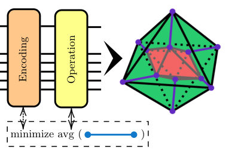
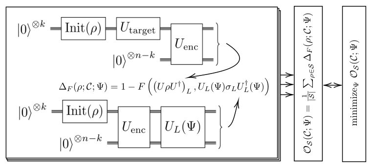
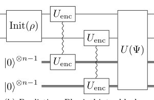
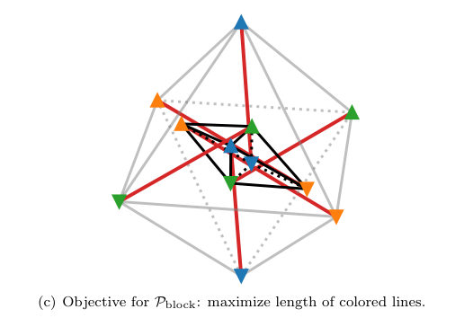
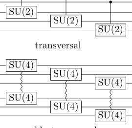
Summary. This paper introduces a variational framework called VarEFTQC for learning the physical implementation of logical gates in any quantum error-correcting code. By using a block-diagonal loss function, the method avoids local minima and can even co-design new non-additive codes tailored to specific hardware noise. This provides a practical tool for designing hardware-adapted logical gadgets for the early fault-tolerant era.
Why it may be interesting. not directly relevant
Main problem. Discovering physical implementations of logical operations for arbitrary quantum error-correcting codes, particularly for non-additive codes that lack a stabilizer description.
Main result. The authors developed the VarEFTQC framework, which successfully re-discovers known transversal gates and can co-design noise-tailored non-additive encodings with desired logical gate sets.
Method. A variational learning-based framework using parameterized unitary ansätze and a block-diagonal loss function optimized via L-BFGS to minimize fidelity error over a unitary two-design.
Model / system. Quantum error-correcting codes (both stabilizer and non-additive/learned) where logical qubits are encoded into larger physical Hilbert spaces, subject to various noise models including Pauli, depolarizing, and biased noise.
Key observables. Fidelity-based operation loss, distinguishability loss, and the Gram matrix of pairwise fidelities.
Important parameters / regimes. Code parameters (n, k, d), ansatz depth (layer repetition), and noise parameters (p_X, p_Y, p_Z).
Assumptions / limitations. The framework assumes access to the encoding unitary (U_enc) and focuses on gate implementation rather than decoder discovery; it also assumes independent errors on physical qubits.
Figures summary. Figure 1 shows the learning framework schematic; Figure 2 illustrates the variational pipeline; Figure 3 shows the circuit for two-qubit gates; Figure 4 visualizes the geometric effect of loss variants on the Bloch sphere; Figure 5 shows the ansatz hierarchy; Figure 6 compares loss function success rates and ansatz depth; Figure 8/9/10/12 visualize training dynamics and Gram matrix structures.
Paper structure. The paper introduces the problem of logical gate discovery, defines the VarEFTQC co-design framework, details the learning pipeline and loss function variants (diagonal, block-diagonal, full), validates the method on stabilizer codes, and demonstrates application to noise-tailored non-additive codes.
Logical operations are essential for quantum computation within quantum error-correcting codes. However, discovering their physical realizations is challenging, especially for non-additive codes that lack a stabilizer description. We present a general learning-based framework that, given only an encoding circuit, constructs physical implementations of logical operations while enforcing structural properties such as transversality or shallow depth. Our approach is validated by rediscovering known logical operations of standard stabilizer codes. We then extend it to a co-design procedure, dubbed variational early fault-tolerant quantum computing (VarEFTQC), which tailors non-additive encodings to a given noise model and enforces desired logical gate sets, such as transversal IQP-type families or low-depth universal sets. A software library implements the complete learning pipeline, including loss-function variants, ansatz families, and optimization routines. Together, these results position VarEFTQC as a practical tool for discovering hardware-adapted logical gadgets for early fault-tolerant quantum computing.
Authors: Arianna Meinking, Julie Campos, Kenneth R. Brown
Type: theory · Category: quantum information and computing · PDF: https://arxiv.org/pdf/2605.27598v1
Analysis basis: full PDF text, analyzed in chunks
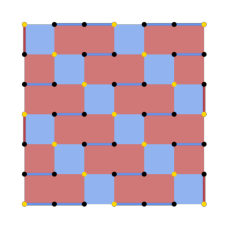
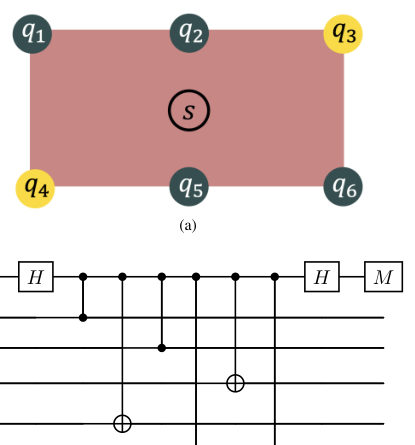
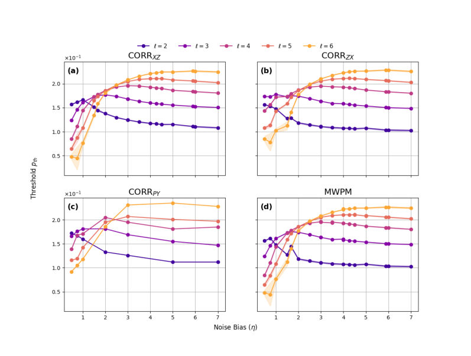
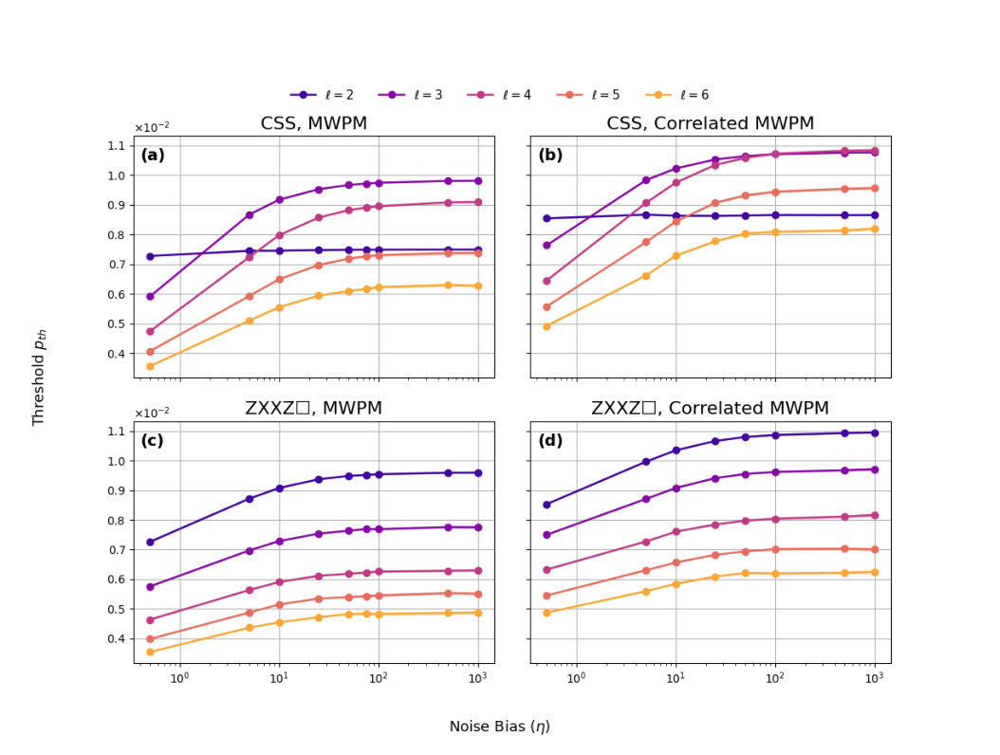
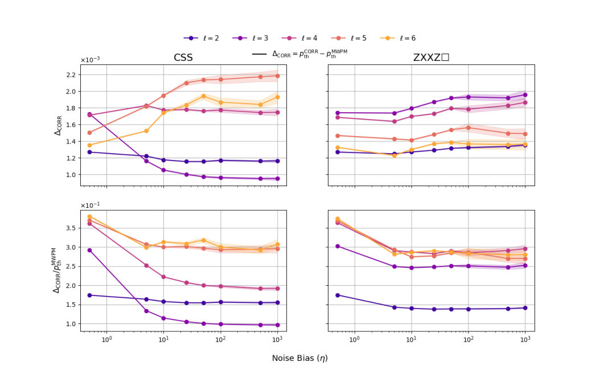
Summary. This paper demonstrates that using correlated decoding techniques can significantly boost the performance of quantum error correction for codes specifically designed for biased noise. By accounting for the relationship between X and Z errors, the researchers found higher error thresholds in realistic circuit-level noise environments.
Why it may be interesting. not directly relevant
Main problem. Improving the error-correction thresholds of Clifford-deformed compass codes under biased circuit-level noise by leveraging correlations between X and Z errors.
Main result. Correlated decoding significantly enhances error thresholds for all noise biases under circuit-level noise, with the relative gain being higher for codes with asymmetric stabilizers.
Method. Large-scale Monte Carlo simulations using Stim and PyMatching, comparing standard MWPM with correlated MWPM (two-stage and hyperedge-informed) using conditional probabilities.
Model / system. Clifford-deformed elongated compass codes (specifically the ZXXZ deformation) subject to an asymmetric Pauli noise channel (biased noise) and circuit-level noise models.
Key observables. Error thresholds (p_th), logical error rates for X and Z memories, and the complementary gap (g) for decoder confidence.
Important parameters / regimes. Noise bias (eta), elongation parameter (l), code distance (d), and decoding order (ZX vs XZ).
Assumptions / limitations. The study assumes a biased noise model typical of platforms like trapped ions or superconducting qubits and relies on the accuracy of the estimated conditional error probabilities.
Figures summary. Figure 1 shows the code schematic; Figure 2 depicts the deformed stabilizer and its extraction circuit; Figure 3 shows thresholds for different decoding orders; Figure 4 compares thresholds for different decoders; Figure 5 plots absolute and relative gains vs bias; Figure 6 shows gate ordering to avoid hook errors.
Paper structure. The paper introduces the problem of biased noise in QEC, describes the Clifford-deformed compass code structure, details the correlated decoding algorithm and noise models, presents simulation results comparing thresholds and gains, and concludes with performance analysis across different parameters.
Quantum error correction (QEC) is often implemented on hardware that experiences biased noise, where dephasing errors occur more frequently than other errors. This has motivated many recent efforts to develop bias-tailored QEC codes, such as the Clifford-deformed compass codes: a family of codes that achieve high thresholds under biased dephasing noise. We perform circuit-level simulations of the Clifford-deformed elongated compass codes under a biased noise model and evaluate code thresholds using standard minimum weight perfect matching (MWPM) and correlated MWPM. We find that correlated decoding enhances thresholds for all noise biases relative to standard MWPM under circuit-level noise. Our results demonstrate that correlated decoding leads to a higher relative gain in thresholds compared to standard MWPM when applied to codes with asymmetric stabilizers under biased noise.
Authors: M. I. Krivoruchenko
Type: theory · Category: other · PDF: https://arxiv.org/pdf/2605.27637v1
Analysis basis: full PDF text, analyzed in chunks
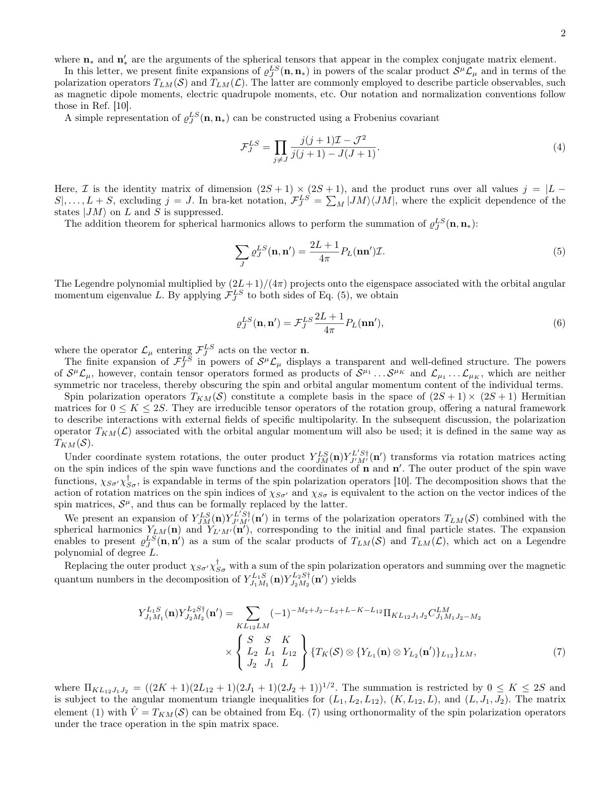
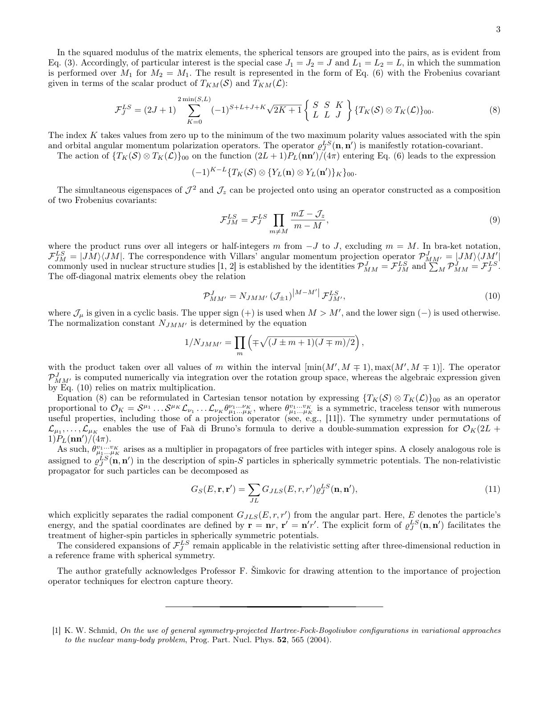
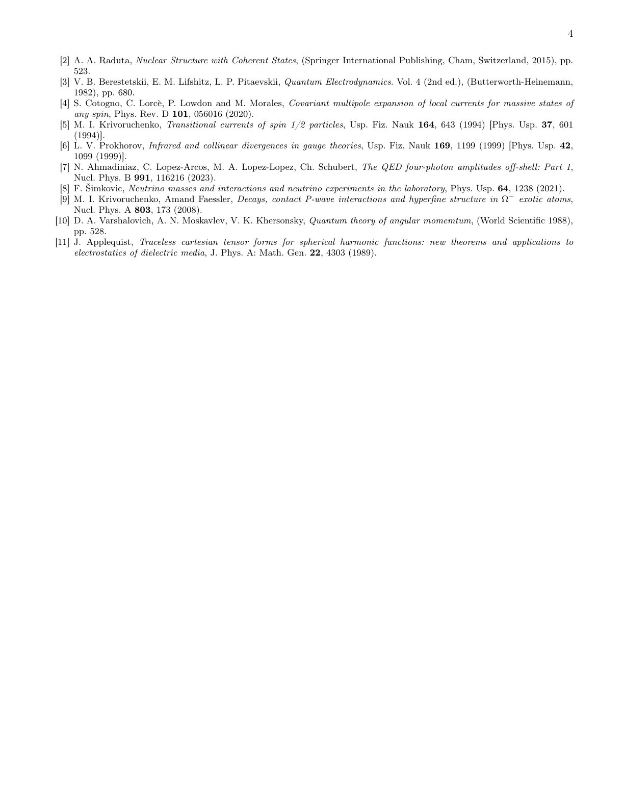
Summary. This paper develops an algebraic method to construct projection operators for total and orbital angular momentum. By providing an expansion in terms of polarization operators, it allows for the efficient separation of radial and angular components in calculations involving higher-spin particles in symmetric potentials.
Why it may be interesting. not directly relevant
Main problem. The construction of an efficient projection operator onto the simultaneous spin-S and orbital angular momentum eigenspaces to simplify matrix element calculations.
Main result. The derivation of a rotation-covariant projection operator expressed as both a polynomial in the scalar product of spin and orbital angular momentum and a finite expansion of polarization operators.
Method. The use of the Frobenius covariant and algebraic expansion techniques involving irreducible tensor operators and polarization operators.
Model / system. Particles with spin-S in spherically symmetric potentials, with applications ranging from nuclear shell models to relativistic particles after 3D reduction.
Key observables. Transition matrix elements, decay rates, magnetic dipole moments, and electric quadrupole moments.
Important parameters / regimes. Quantum numbers J, L, S, and M; particle energy E; and spatial coordinates r, r'.
Assumptions / limitations. The derivation assumes spherical symmetry in the potential or reference frame.
Paper structure. The paper introduces the problem of angular momentum projection, develops the Frobenius covariant approach, provides two equivalent algebraic representations, establishes a connection to Villars' projection, and demonstrates applicability to higher-spin particles and relativistic reductions.
The Frobenius covariant is used to construct a projection operator onto the spin-S eigenspaces associated with the squares of the total and orbital angular momenta. The covariant admits two equivalent representations: as a polynomial in powers of the scalar product of the spin and orbital angular momentum operators, and as a finite expansion in terms of their respective polarization operators. A correspondence is established with Villars' angular momentum projection, used in nuclear structure studies.
Authors: François Impens, David Guéry-Odelin
Type: theory · Category: quantum information and computing · PDF: https://arxiv.org/pdf/2605.28754v1
Analysis basis: full PDF text, analyzed in chunks
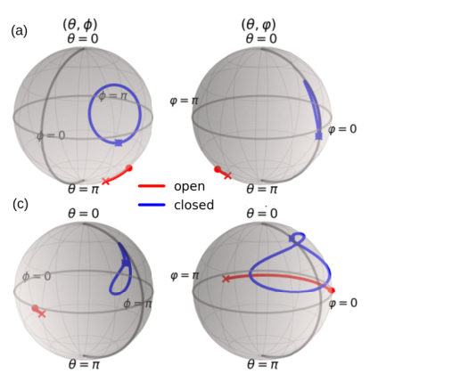
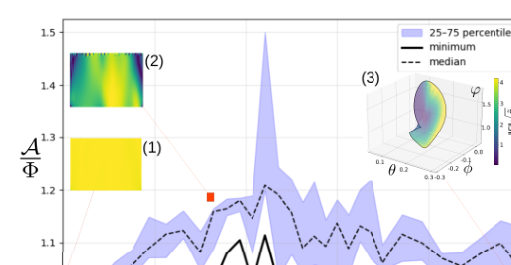
Summary. This paper establishes a universal Quantum Geometric Limit for non-Abelian holonomies, proving that the magnitude of a holonomy is bounded by the surface integral of its curvature norm. It introduces a method to find optimal control paths by treating the problem as a non-Abelian version of the brachistochrone problem. This is significant for optimizing the efficiency of non-Abelian gate implementations in quantum computing.
Why it may be interesting. It provides a fundamental geometric counterpart to Quantum Speed Limits, offering a way to quantify the 'geometric overhead' and resource costs for implementing non-Abelian gates in holonomic quantum computing.
Main problem. Establishing fundamental geometric bounds (Quantum Geometric Limits) for non-Abelian Wilczek-Zee holonomies and finding optimal control protocols to implement target gates.
Main result. The authors derive universal bounds where the holonomy magnitude is limited by the surface integral of the non-Abelian curvature norm, and show that optimal protocols can minimize geometric cost by aligning curvature along a single Lie-algebra direction.
Method. A variational approach using an effective Stokes-Schrödinger dynamics and a non-Abelian brachistochrone ansatz, mapping the optimization to a particle subject to a non-Abelian Lorentz force.
Model / system. The study focuses on non-Abelian adiabatic transport within an N-dimensional degenerate subspace, specifically using a four-level 'tripod' atomic system with a two-dimensional dark subspace.
Key observables. Holonomy magnitude U(C), Hilbert-Schmidt and operator-norm curvature norms, and the efficiency ratio of surface area to curvature flux.
Important parameters / regimes. The adiabatic regime, the non-Abelian curvature F, and the Fubini-Study metric g.
Assumptions / limitations. The dynamics are assumed to be in the adiabatic regime involving degenerate eigenspaces.
Figures summary. Figure 1 shows non-Abelian brachistochrone trajectories for target gates; other plots illustrate the cost of closed-loop holonomies versus angle and the local alignment of transported curvature.
Paper structure. The paper introduces the problem of non-Abelian holonomy bounds, derives the Quantum Geometric Limit (QGL) using a Stokes-Schrödinger framework, formulates the optimization as a variational problem, and demonstrates near-optimal solutions using a tripod model.
Stokes' theorem turns Abelian Berry phases into curvature fluxes, whereas path ordering precludes such a simple formula for non-Abelian holonomies. We show that a quantitative form of this intuition survives: arbitrary Wilczek--Zee holonomies obey a universal quantum geometric limit~(QGL), in which the holonomy magnitude is bounded by a surface integral of the non-Abelian curvature norm. Recasting holonomic evolution as an effective Stokes--Schrödinger dynamics driven by transported curvature, we identify the QGL as the geometric counterpart of conventional quantum speed limits, with a time-integrated generator norm replaced by a surface-integrated curvature cost. The induced contour--surface variational problem is governed by a non-Abelian Lorentz force, which we address with a brachistochrone ansatz of curvature-weighted geodesics. Applied to an SU(2) tripod dark subspace, near-optimal protocols spontaneously align the transported curvature along a single Lie-algebra direction, effectively taming non-Abelianity.
Authors: Harald O. Jeschke, Daniel Guterding, Pratyay Ghosh
Type: both · Category: strongly correlated electrons · PDF: https://arxiv.org/pdf/2605.28821v1
Analysis basis: full PDF text, analyzed in chunks
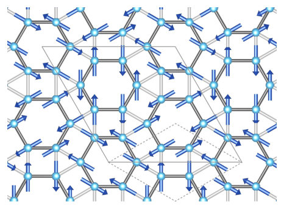
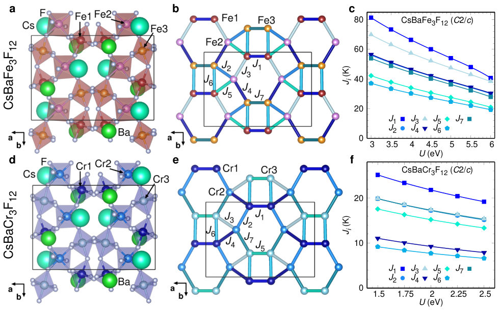
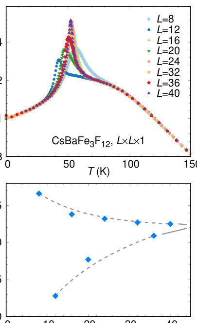
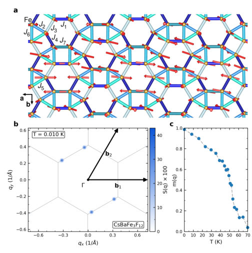
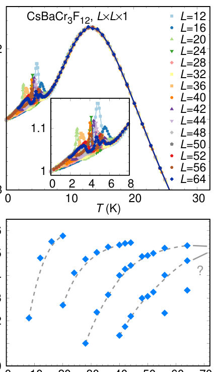
Summary. This paper identifies two layered transition-metal fluorides as experimental realizations of the elusive ruby lattice antiferromagnet. By combining DFT and Monte Carlo simulations, the authors show that these materials host incommensurate spin-spiral states driven by frustrated exchange interactions. The work provides quantitative predictions for future neutron-scattering experiments.
Why it may be interesting. not directly relevant
Main problem. The difficulty in finding experimental material realizations of the ruby lattice antiferromagnet, which is expected to host exotic emergent phenomena and topological orders.
Main result. The study identifies CsBaFe3F12 and CsBaCr3F12 as excellent candidates for 2D ruby-lattice magnetism, demonstrating that both compounds realize an incommensurate spiral low-temperature state.
Method. The researchers used DFT+U energy mapping to extract Heisenberg exchange interactions, Classical Monte Carlo simulations to study thermodynamic behavior, and Luttinger-Tisza analysis to identify magnetic ordering vectors.
Model / system. The physical systems are the layered transition-metal fluorides CsBaFe3F12 (S=5/2) and CsBaCr3F12 (S=3/2) featuring a distorted ruby lattice geometry. The model is a Heisenberg antiferromagnet on a 12-site basis lattice.
Key observables. Magnetic specific heat, spin structure factor S(q), magnetic ordering temperature (Neel temperature), and magnetic order parameter.
Important parameters / regimes. Exchange interaction strengths (J1 through J7), Hubbard U, spin magnitude S, and the stiffness (kappa) of the energy landscape.
Assumptions / limitations. The study uses classical Monte Carlo rather than quantum Monte Carlo and assumes the magnetic interactions can be accurately captured by a Heisenberg Hamiltonian.
Figures summary. Figure 1 shows the ruby lattice geometry and ground state; Figure 2 displays crystal structures, exchange paths, and exchange interaction values as a function of U.
Paper structure. The paper introduces the ruby lattice problem, presents the structural and exchange characterization of the two fluorides via DFT, details the Monte Carlo and Luttinger-Tisza results for magnetic ordering, and concludes with an analytical framework explaining the difference in magnetic stiffness between the two compounds.
The antiferromagnet on the ruby lattice is expected to host a range of exotic emergent phenomena, yet its material realization has remained elusive. Here we show that the layered transition metal fluorides CsBaFe$_3$F$_{12}$ and CsBaCr$_3$F$_{12}$ with Fe$^{3+}$ and Cr$^{3+}$ ions realize only slightly distorted ruby lattice geometries with spin moments $S=5/2$ and $S=3/2$, respectively. Their microscopic Hamiltonians, calculated with DFT energy mapping, are dominated by short-ranged antiferromagnetic interactions within the ruby layers. Classical Monte Carlo simulations reveal strong frustration in both compounds, with local Néel correlations on the hexagonal plaquettes and distinct long-range ordering tendencies governed by weaker triangular links. For CsBaFe$_3$F$_{12}$, the calculated thermodynamic behaviour is consistent with the experimentally reported magnetic ordering scale. For CsBaCr$_3$F$_{12}$, classical Monte Carlo and Luttinger-Tisza analysis reveal competing low-energy ordering wave vectors, strong finite-size sensitivity, and a tendency toward incommensurate order. Overall, our results establish these fluorides as experimentally accessible ruby-lattice antiferromagnets and provide quantitative predictions for future neutron-scattering studies.
Authors: Baptiste Bernard, Luca Messina, Eiji Kawasaki, Emeric Bourasseau
Type: theory · Category: disordered systems and neural networks · PDF: https://arxiv.org/pdf/2605.28594v1
Analysis basis: full PDF text, analyzed in chunks

Summary. This paper introduces an improved AI-driven method called PULSE to estimate the partition function and thermodynamic properties of chemically disordered materials. By using an inverse Variational Autoencoder, the method achieves high precision and efficiency, particularly in high-temperature regimes, while scaling effectively with system size.
Why it may be interesting. not directly relevant
Main problem. Estimating the thermodynamic properties and partition functions of chemically disordered compounds is computationally expensive due to the massive configuration space required for traditional Monte Carlo convergence.
Main result. The improved PULSE method accurately and efficiently estimates partition functions and thermodynamic properties, outperforming Wolff and Wang-Landau algorithms in the high-temperature disordered regime and demonstrating excellent scalability.
Method. An improved version of the PULSE method using an 'inverse' Variational Autoencoder (VAE) architecture and unsupervised learning to optimize a distribution that minimizes Kullback-Leibler divergence.
Model / system. The method is validated using the 2D Ising model on a square lattice, serving as a proxy for complex chemically disordered materials like high-entropy alloys and MOX fuels.
Key observables. Partition function (Z), average energy, specific heat (Cv), magnetic susceptibility, and magnetization.
Important parameters / regimes. Temperature (T), inverse temperature (beta), system size (N), and number of samples (m).
Assumptions / limitations. The observable property must be strictly positive for the logarithmic formulation; high-energy configurations are assumed to be negligible at low temperatures.
Figures summary. The figures illustrate the PULSE architecture, compare PULSE estimates to exact solutions for the partition function and magnetization, show the reconstruction of thermodynamic properties, and demonstrate scalability and error comparisons against Wolff and Wang-Landau algorithms.
Paper structure. The paper introduces the scientific problem of chemical disorder, presents the mathematical framework of the improved PULSE method, validates the approach using the 2D Ising model, compares performance against traditional Monte Carlo methods, and discusses scalability and limitations.
In this article, we present an improved version of the PULSE method (Partition function Unsupervised Learning Sampling and Evaluation) for estimating the thermodynamic properties of chemically disordered compounds. The aim is to reduce the computational cost of Monte Carlo approaches for this type of material and to demonstrate that this generative tool can estimate thermodynamic properties by sampling and estimating the partition function of the system. To validate this innovative approach, we use the 2D Ising model as a benchmark. We demonstrate that our method accurately reproduces average properties with high precision and efficiency compared to traditional Monte Carlo sampling methods. Our results highlight the efficiency and adaptability of the PULSE method, making it a valuable tool for studying materials for which conventional methods are too inefficient to compute properties affected by chemical disorder at low cost.
Authors: Yo Nakamura, Kazuyuki Sekizawa
Type: theory · Category: other · PDF: https://arxiv.org/pdf/2605.28783v1
Analysis basis: full PDF text, analyzed in chunks
Summary. This paper introduces an efficient orbital-free density functional theory approach to simulate the complex, non-spherical structures known as nuclear pasta in neutron stars. By avoiding pre-defined geometric shapes, the method successfully discovers exotic new configurations and provides a computationally scalable way to study the neutron star crust.
Why it may be interesting. not directly relevant
Main problem. The high computational cost of 3D microscopic calculations (Kohn-Sham DFT) makes it difficult to systematically study the complex, varying geometric structures of 'nuclear pasta' in neutron star inner crusts.
Main result. The authors developed a self-consistent orbital-free density functional theory (SC-ETF) that efficiently identifies both standard and exotic pasta structures (like 'nuclear waffles' or connected rods) without prior geometric assumptions.
Method. A self-consistent Extended Thomas-Fermi (SC-ETF) method using a second-order expansion of the Skyrme energy density functional, solved via a 3D gradient descent method on a Cartesian mesh.
Model / system. The system is the inner crust of a neutron star, consisting of a periodic lattice of protons and neutrons (nuclear pasta) immersed in a background gas of dripped neutrons and electrons.
Key observables. Nucleon number densities (neutron and proton), total energy per nucleon, proton fraction, and geometric configurations of the pasta phases.
Important parameters / regimes. Average nucleon number densities, proton fractions, simulation box sizes (up to 40 fm), and mesh spacing (delta x).
Assumptions / limitations. The method uses a second-order (hbar^2) expansion, omitting higher-order shell effects and pairing correlations; electrons are treated as a relativistic homogeneous gas.
Figures summary. Figures show visual examples of exotic pasta shapes (e.g., x-cylinders, slabs with holes), phase diagrams of structures vs. density, and stability analysis of the method as a function of mesh spacing.
Paper structure. The paper introduces the computational challenge of nuclear pasta, proposes the SC-ETF/OF-DFT method, demonstrates its ability to find non-empirical shapes, discusses the impact of box size, and concludes with a numerical stability analysis of various Skyrme functionals.
Background: In the bottom layer of the inner crust of neutron stars, various crystalline structures are expected to emerge that are collectively called ``nuclear pasta.'' It is desired to know properties of nuclear pasta in a wide variety of conditions for astrophysical applications. However, three-dimensional fully-microscopic calculations require huge computational effort that makes it still challenging to carry out systematic calculations. Purpose: In this paper, we propose an efficient method to calculate various nuclear pasta configurations in a non-empirical manner, based on three-dimensional orbital-free density functional theory (OF-DFT). We demonstrate the feasibility of the proposed approach by applying it to densities throughout the inner crust of neutron stars. Methods: As a first application of OF-DFT for nuclear pasta, we employ the second-order extended Thomas-Fermi (ETF) expansion of Skyrme energy density functional (EDF) to construct an EDF that depends only on neutron and proton number densities. Based on the variational principle, we derive Euler-Lagrange equations to determine optimal neutron and proton density distributions and solve them self-consistently. In this work, we call this approach the self-consistent ETF (SC-ETF) method. Results: We perform three-dimensional SC-ETF calculations with various box sizes. We successfully obtain various pasta structures, depending on given average nucleon number densities, consistent with earlier studies. Moreover, we find other exotic structures, such as bending and/or connected rods, slabs with a hole, etc., underlining the advantage of the self-consistent formalism. Conclusions: We demonstrate that the SC-ETF method proposed in this study, which can be regarded as a realization of OF-DFT, is a promising tool that can efficiently describe complex pasta structures without empirical assumptions on geometric shapes.
Authors: Lea E. Bottini, Clement Delcamp, Edmund Heng, Campbell K. McLauchlan, Dominic J. Williamson
Type: theory · Category: strongly correlated electrons · PDF: https://arxiv.org/pdf/2605.28688v1
Analysis basis: full PDF text, analyzed in chunks
Summary. This paper provides a rigorous mathematical foundation for topological phases enriched by non-invertible symmetries. It demonstrates how anyon condensation leads to a hypergroup-graded structure and shows that the resulting non-invertible symmetry can be captured using Hopf monads.
Why it may be interesting. not directly relevant
Main problem. The paper aims to formalize and generalize the notion of Symmetry Enriched Topological (SET) order to cases where the enriching symmetry is non-invertible, specifically through anyon condensation.
Main result. The authors establish a mathematical framework using hypergroup-graded fusion categories and Hopf monads to describe the localized excitations and the non-invertible symmetry action in condensed topological lattice gauge theories.
Method. The study employs the tube algebra approach, the relative Drinfeld center construction, and the theory of Hopf monads to classify excitations and encode symmetry actions.
Model / system. The primary models are finite group topological lattice gauge theories (quantum double models) and generic string-net models, specifically examining the condensation of an arbitrary algebra of charges.
Key observables. Localized excitations (anyons), domain walls, and the categorical action of the non-invertible symmetry.
Important parameters / regimes. The group G (parent theory) and subgroup H (condensed theory), and the hypergroup grading of the resulting theory.
Assumptions / limitations. The construction assumes the condensation of pure charges and relies on the existence of a spherical fusion subcategory within a larger category.
Paper structure. The paper begins by defining the lattice gauge theory and anyon condensation mechanism, moves to the mathematical classification of excitations using tube algebras, introduces the Hopf monad framework for non-invertible symmetries, provides explicit calculations using the D3 and D6 groups, and concludes with a generalization to generic string-net models.
We use finite group topological lattice gauge theory, also known as the quantum double model, as a lens to explore a notion of topological order enriched by a non-invertible symmetry. For invertible symmetry enriched topological order, there is an established axiomatisation in terms of a G-crossed braided fusion category. We lay the foundations for a generalisation of this notion. By condensing an arbitrary algebra of charges in a quantum double model, we demonstrate that the category of localised excitations in the resulting theory forms a hypergroup-graded extension of the category of deconfined excitations. For every element in the hypergroup, the associated domain wall acts in a typically non-invertible way on these localised excitations. Both this action and the monoidal structure are compatible with the hypergroup grading. The actual categorical action is encoded in a Hopf monad on the category of localised excitations, and gauging the non-invertible symmetry amounts to computing the category of modules over this Hopf monad. Finally, we outline how this framework naturally extends to theories obtained by condensing algebras in a generic string-net model.
Authors: Guido Bellomo, Martín Santesteban, Patricio Bruno, Santiago Cifuentes, Gustavo Martín Bosyk
Type: theory · Category: quantum information and computing · PDF: https://arxiv.org/pdf/2605.28723v1
Analysis basis: full PDF text, analyzed in chunks
Summary. The paper proposes a new way to perform knowledge graph embeddings on near-term quantum computers. By using a 'compute-uncompute' method, the authors reduce the number of qubits and the complexity of measurements required. This makes the algorithm more compatible with current noisy quantum hardware.
Why it may be interesting. not directly relevant
Main problem. Reducing the hardware demands, such as qubit overhead and circuit depth, for Variational Quantum Algorithms (VQAs) used in Knowledge Graph Embedding on NISQ devices.
Main result. The introduction of the qCUERO framework and a new 'compute-uncompute' model that eliminates the need for ancillary qubits and entangled measurements while maintaining an interpretable score function.
Method. A hybrid quantum-classical pipeline using a compute-uncompute strategy where the score is estimated from the probability of the all-zero outcome in a computational basis measurement.
Model / system. A variational quantum model where entities are represented as quantum states in a Hilbert space of dimension 2^n and relations are represented as unitary operations.
Key observables. The score function (delta_hrt) representing the plausibility of a triple (head, relation, tail).
Important parameters / regimes. Trainable parameters for entities (theta_e) and relations (theta_r); Hilbert space dimension d = 2^n.
Assumptions / limitations. The study is primarily theoretical; the impact of quantum noise and performance on real-world knowledge graphs are yet to be fully validated.
Figures summary. Fig 1 compares existing Switch and Swap test architectures; Fig 2 shows the general hybrid quantum-classical pipeline; Fig 3 illustrates the proposed compute-uncompute architecture.
Paper structure. The paper introduces a unified framework (qCUERO), analyzes existing architectures (Switch and Swap tests), proposes a new compute-uncompute model, and discusses trade-offs regarding circuit depth and error robustness.
Variational Quantum Algorithms (VQAs) combine quantum circuits with classical optimization to tackle problems that may benefit from the capabilities of near-term quantum hardware. In knowledge graph embedding, recent proposals based on this approach follow a similar overall architecture but differ in the way they compute the score function and in the number of qubits they require. One design uses $n+1$ qubits and obtains the score through a switch test on an ancillary qubit, while another employs $2n+1$ qubits and applies a swap test between two registers. In both cases, entities and relations are represented in a Hilbert space of dimension $d = 2^n$, with comparable computational cost and the same mean squared error loss. This work introduces a unified framework that captures the two schemes and makes it possible to explore new variants. Within this setting, we propose an alternative that keeps the intuitive meaning of the score function while dispensing with ancillary qubits and entangled measurements. The result is a model better suited to current NISQ devices, reducing hardware demands without sacrificing interpretability.
Authors: Neha Kumari, Sankalpa Ghosh
Type: theory · Category: strongly correlated electrons · PDF: https://arxiv.org/pdf/2605.27608v1
Analysis basis: full PDF text, analyzed in chunks
Summary. This paper establishes that zero modes of a non-abelian Dirac operator are a generic feature of topologically non-trivial band insulators. By linking the geometry of the Quantum Geometric Tensor to these zero modes, the authors provide a unified non-interacting foundation for understanding complex phases like Fractional Chern Insulators.
Why it may be interesting. not directly relevant
Main problem. Investigating the existence and implications of zero modes of a non-abelian Dirac operator in the momentum space of topologically non-trivial band insulators.
Main result. The authors prove that the local gauge-invariance of the Quantum Geometric Tensor (QGT) implies the existence of zero modes for a non-abelian Dirac operator, providing a theoretical framework for understanding Fractional Chern Insulator (FCI) phases.
Method. The study utilizes non-abelian gauge theory, the quantum adiabatic approximation, and the minimization of a Euclidean action, with explicit solutions for the zero modes expressed via Jacobi Theta functions.
Model / system. The framework applies to generic N-level (sublattice/orbital) band insulators with degeneracy points in the Brillouin zone, specifically analyzing the lattice Dirac (QWZ) model and rhombohedral N-layer graphene.
Key observables. Quantum Geometric Tensor (QGT), non-abelian Berry connection (Wilczek-Zee connection), Berry curvature, and Fubini-Study metric.
Important parameters / regimes. Number of bands (N), displacement field energy (D), generalized Dirac velocity, and the presence of degeneracy points in the Brillouin zone.
Assumptions / limitations. The system is assumed to be in the quantum adiabatic limit, and the derivation relies on the local gauge-invariance of the QGT.
Figures summary. Figure 1 shows dispersion plots for the lattice Dirac model and continuum dispersion for rhombohedral multilayer graphene; Figure 2 shows the reciprocal lattice of the lattice Dirac model.
Paper structure. The paper begins by deriving the gauge-invariant QGT and zero-mode equations, moves to solving these equations using holomorphic representations and Jacobi Theta functions, applies the framework to specific models (QWZ and rhombohedral graphene), and concludes with a mathematical appendix on theta function properties.
We show that the local gauge-invariance of the quantum geometric tensor (QGT) defined in the Block-momentum space of a generic $N$-level (sublattice degrees of freedom) band insulator implies the existence of zero modes of non-abelian Dirac operator in such momentum space. Solutions of these zero modes equations in the two-dimensional Brillouin zone torus, in terms of Jacobi Theta function determine the probability amplitudes associated with the $N$-component ground state wave-function under adiabatic approximation in this Hilbert space. These solutions subjected to normalization, defines a complex projective ($CP$) space of $N-1$ dimension ($CP^{N-1}$ space) when one or more degeneracy points exist in the dispersion spectrum of such band-isulator. We show how the non-abelian generalization of the vortexability criterion of Chern bands automatically follows from these zero-mode equations, and also demonstrate their connection with momentum space-version of Lowest landau level algebra. Subsequently we write an Euclidean action from which these zero mode equations follow. We point out that the non-interacting part of different paradigms used to understand fractional Chern insulator(FCI) like phases in a host of two-dimensional material can be understood within this approach. We analyse two effective hamiltonian : lattice Dirac (QZW) model and two-band model for rhombohedral $N$-layer graphene in our propsoed framework and obtain important conclusions.
Authors: Zhe Cui, Haoran Fan, Wenjiang Zhou, Xianghong Jin, Yuchen Gu, Da Ma, Cong Xiao, Hua Jiang, Xincheng Xie, Bai Song, Yuan Li, Xi Lin
Type: experiment · Category: strongly correlated electrons · PDF: https://arxiv.org/pdf/2605.28249v1
Analysis basis: full PDF text, analyzed in chunks
Summary. This paper reports the discovery of a spontaneous thermal Hall effect in the antiferromagnetic insulator Na2Co2TeO6 at zero external magnetic field. The effect is driven by an intrinsic effective field arising from a unique non-coplanar spin texture. This finding challenges traditional views on heat conduction and provides a new way to explore topological responses in quantum materials.
Why it may be interesting. not directly relevant
Main problem. The study aims to understand the origin of a spontaneous thermal Hall effect (STHE) in an antiferromagnetic insulator in the absence of an external magnetic field.
Main result. The researchers discovered a large zero-field thermal Hall effect in Na2Co2TeO6, which is attributed to an intrinsic effective magnetic field generated by a non-coplanar spin texture (vortices and magnetization) rather than a net magnetic moment.
Method. Thermal Hall conductivity measurements were performed on single-crystal Na2Co2TeO6 using a cryostat, applying a longitudinal heat flow and detecting transverse temperature gradients with high-resolution thermocouples.
Model / system. The physical system is the honeycomb oxide Na2Co2TeO6, an antiferromagnetic insulator characterized by in-plane vortices and nearly compensated out-of-plane magnetic moments.
Key observables. Transverse thermal conductivity (kappa_xy), longitudinal thermal conductivity (kappa_xx), thermal Hall angle (kappa_xy/kappa_xx), and magnetization (m).
Important parameters / regimes. Neeel temperature (TN approx 27 K), compensation temperature (T*), and effective magnetic field (B_eff).
Assumptions / limitations. The sample is assumed to be in a single antiferromagnetic domain achieved through magnetic field training.
Figures summary. Fig 1 shows the experimental setup, sample training procedure, and raw temperature data; Fig 2 illustrates the spin arrangement and the temperature dependence of the zero-field thermal Hall signal; Fig 3 compares the thermal Hall response under effective and external magnetic fields.
Paper structure. The paper introduces the phenomenon of the thermal Hall effect, describes the experimental setup and sample preparation, presents the discovery of the zero-field effect and its temperature dependence, proposes a mechanism based on an effective field from spin textures, and compares the results to external field-induced effects.
Fourier's law dictates that heat flow is usually parallel to the applied temperature gradient. However, under a high magnetic field, heat flow carried by both electrons in conductors and phonons in insulators can be deflected, a phenomenon known as thermal Hall effect. Intriguingly, we observe at zero field a spontaneous thermal Hall effect in an antiferromagnetic insulator. Despite a vanishingly small uncompensated magnetization, the magnitude of this effect is surprisingly large, comparable to typical responses induced by several teslas of external field. This zero-field behavior indicates that charge-neutral heat carriers can be governed by an intrinsic effective field arising from the unique spin arrangement. Our discovery challenges the centuries-old preconception of heat conduction and open up new avenues for exploring non-trivial topological responses in quantum materials.
Papers from cond-mat.mtrl-sci, mes-hall, other, soft, supr-con. These archives are de-prioritized — they appear at the end regardless of relevance score.
Authors: Markus Weißenhofer, Philipp Rieger, Chandan K. Singh, M. S. Mrudul, Sergiy Mankovsky, Peter M. Oppeneer
Type: theory · Category: strongly correlated electrons · PDF: https://arxiv.org/pdf/2605.28425v1
Analysis basis: full PDF text, analyzed in chunks
Topic relevance: 🔥 non-equilibrium dynamics 4/5 · spintronics-quantum-optics interface 2/5
Summary. This paper shows that driving lattice vibrations with specific angular momentum can selectively control the topology of magnon bands in 2D magnets. By using circularly polarized phonons, one can open, tune, and even reverse the topological phases of magnons. This provides a versatile platform for the Floquet engineering of bosonic excitations in van der Waals materials.
Why it may be interesting. This work demonstrates a method for Floquet engineering of topological excitations using driven lattice dynamics, which is highly relevant to the study of non-equilibrium many-body dynamics and the control of Berry curvature.
Main problem. The challenge of achieving dynamical control over Berry curvature and magnon band structures to engineer and reverse topological phases.
Main result. The authors demonstrate that circularly and elliptically polarized phonons carrying phonon angular momentum (PAM) can selectively induce chiral interactions, opening and tuning topological magnon gaps and reversing Chern numbers.
Method. The study uses an ab initio framework (SPRKKR, VASP, Phonopy) combined with Floquet theory and a van Vleck expansion to derive an effective time-independent Hamiltonian.
Model / system. The primary system is monolayer CrI3, a 2D van der Waals ferromagnet, modeled using an atomistic Heisenberg Hamiltonian with spin-lattice coupling and Dzyaloshinskii-Moriya interactions.
Key observables. Magnon band gaps, Chern numbers, and anomalous thermal Hall conductivity.
Important parameters / regimes. Phonon angular momentum (PAM), phonon polarization phase, and the high-frequency phonon regime where phonon frequency exceeds magnon frequencies.
Assumptions / limitations. The reliability of the effective Hamiltonian relies on the vanishing of higher-order corrections in the van Vleck expansion and the high-frequency approximation.
Figures summary. Figure 1 shows the CrI3 lattice and phonon mode representations; Figure 2 illustrates the modification of the magnon spectrum and Berry curvature by Eg phonons; Figure 3 relates phonon polarization to the magnon gap and Chern numbers; Figure 4 shows magnon bandstructure engineering.
Paper structure. The paper introduces the problem of dynamical topological control, presents an ab initio-based Floquet framework, analyzes the symmetry-selective role of phonon angular momentum, demonstrates the results on CrI3, and discusses experimental signatures like thermal Hall conductivity.
Dynamical control of Berry curvature remains an outstanding challenge in the engineering of topological phases. Here, we demonstrate control of magnon band structures via coherently driven phonons, based on \textit{ab initio} spin-lattice coupling and Floquet theory. We show that this control is symmetry selective: linearly polarized phonons leave the spectrum unchanged, whereas circular and elliptical phonons carrying finite phonon angular momentum (PAM) induce chiral interactions that open and tune gaps at Dirac points, generating and reversing topological magnon phases. The gap magnitude and Chern numbers are directly governed by the PAM, enabling handedness-selective topology control. Applied to monolayer CrI$_3$, and supported by symmetry analysis, our results establish driven lattice dynamics as a general route to engineering topological bosonic excitations and a versatile platform for Floquet control of magnetism.
Authors: D. V. Khomitsky, E. A. Lavrukhina, D. P. Krasavin, S. S. Krishtopenko, F. Teppe
Type: theory · Category: quantum information and computing · PDF: https://arxiv.org/pdf/2605.28499v1
Analysis basis: full PDF text, analyzed in chunks
Topic relevance: non-equilibrium dynamics 3/5
Summary. This paper explores how to use electric fields to drive coherent Rabi oscillations between localized corner states in a 2D topological insulator. It identifies an optimal regime where high-frequency manipulation is possible while keeping population loss to the edge-state continuum extremely low. This provides a potential pathway for creating lithographically defined, electrically controllable qubits.
Why it may be interesting. It presents a concrete realization of an electrically driven two-level system where the competition between coherent driving and leakage into a continuum can be precisely controlled, relevant to open quantum systems.
Main problem. Investigating the feasibility of using magnetic-field-induced corner states in a 2D topological insulator as a controllable two-level subsystem (qubit) driven by electric fields.
Main result. The authors demonstrate that GHz-scale Rabi oscillations can be achieved with leakage into the continuum suppressed below 1% by optimizing the electric field amplitude.
Method. The study uses an effective edge-state model to solve the time-dependent Schrödinger equation, explicitly accounting for both discrete localized levels and the continuum of edge states.
Model / system. A 1D edge of a HgTe/CdHgTe quantum well with a double-kink geometry, subject to an in-plane magnetic field that induces a gap and localized states.
Key observables. Rabi frequencies, population of discrete levels, leakage probability into the continuum, and oscillations in the mean coordinate and spin projection.
Important parameters / regimes. Rabi frequencies of 20-40 GHz, electric field amplitudes of 0.05-0.1 ueV/nm, and Zeeman energy scales.
Assumptions / limitations. The edge orientation is piecewise constant, the magnetic field is strictly in-plane, and the outer edge segments are sufficiently long.
Figures summary. Figure 1 shows the physical geometry of the kinked edge; Figures 6 and 7 illustrate the time-dependent populations, leakage, and spin/spatial oscillations under different electric field strengths.
Paper structure. The paper introduces the physical system and Hamiltonian, derives the localized states and their dipole matrix elements, and then performs time-dependent simulations to analyze the trade-off between driving strength and population leakage.
We study coherent electric manipulation of magnetic-field-induced localized states at a double kink of a helical edge in a HgTe/CdHgTe quantum well. An in-plane magnetic field opens a gap in the one-dimensional edge spectrum, while changes in the edge orientation generate localized in-gap states at the kinks. We show that, for suitable geometry and magnetic-field direction, two such states form an effective lithographically defined two-level subsystem. Using an edge-state model that includes both the localized levels and the continuum states outside the magnetic-field-induced gap, we calculate the electric-dipole matrix elements and solve the time-dependent problem under resonant driving. The resulting dynamics exhibits Rabi oscillations with linear frequencies of $20$--$40$~GHz for realistic parameters. We find that the continuum states provide a leakage channel whose strength is strongly controlled by the driving amplitude: reducing the electric field suppresses leakage below the percent level while preserving GHz-scale coherent oscillations. These results establish a route from magnetic-field-induced corner-state physics to electrically driven two-level dynamics in a realistic two-dimensional topological-insulator edge geometry.
← Index · ← Previous · Next →